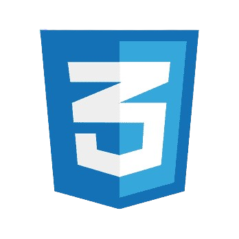

Matheo FRACASSI
ÉTUDIANT EN BTS SIO
Bienvenue sur mon Portfolio
🎓 Je suis actuellement étudiant au lycée Saint Bénigne, situé à Dijon (21), où je poursuis ma première année de BTS SIO (Services Informatiques aux Organisations) dans l'option SISR (Solutions d’Infrastructure, Systèmes et Réseaux). Cette formation, reconnue pour son approche pratique et technique, me permet de développer des compétences solides dans le domaine de l'informatique, en particulier dans les spécialités liées aux systèmes et aux réseaux.
💡 Depuis mon plus jeune âge, l'informatique a toujours suscité mon intérêt et mon admiration. Ce domaine, en constante évolution, m’a toujours fasciné par sa capacité à résoudre des problèmes complexes et à connecter le monde.
🔧 C'est donc tout naturellement que j'ai choisi d’intégrer un cursus spécialisé en optant pour la voie SISR, qui me permet d’explorer des domaines tels que l’administration des réseaux, la gestion des systèmes informatiques, et la cybersécurité.
📘 En complément de mon parcours scolaire, je suis particulièrement motivé pour approfondir mes connaissances et à m'impliquer dans des projets concrets, en vue de devenir un expert dans le domaine des systèmes informatiques et réseaux.
J'envisage pour mon futur le métier d'administrateur système et réseau, un rôle mêlant compétences techniques avancées et résolution de problèmes complexes. Responsable de la gestion et de la maintenance des infrastructures informatiques, je m'intéresse particulièrement à la configuration de serveurs, à la gestion des réseaux et à la sécurité.
Je pratique ce sport mêlant cardio, endurance et force depuis 2022.
Je pratique depuis peu pour me mettre en forme et augmenter mon endurance.
Je pratique ce sport de combat (pieds, poings, tibias et coudes) au Tiger's Gym de Longvic depuis l'été 2024.
Je joue de la guitare électrique et acoustique dans un style rock/métal depuis l'été 2023.
Période : 19 mai - 27 juin 2025
Prise en charge complète du helpdesk : accueil téléphonique, diagnostic, création et suivi des tickets (Autotask). Utilisation d'IT Glue pour retrouver configurations et identifiants. Supervision via Zabbix pour détecter les incidents proactifs.
Intervention sur coupures fibre (ex. incident critique 26 juin 2025). Mise en place de procédures de diagnostic ONT, contrôle voyants (PON / LOS / LAN) et basculement sur solutions 4G temporaires pour clients critiques.
Déploiements : configuration d'extensions, groupes de sonnerie, SVI et messageries. Participation à une migration analogique→IP (25 juin 2025) et résolution d'incidents complexes (ex. SVI et trunks SIP le 27 mai 2025).
Mise en place de solutions réseaux, maintenance informatique, etc.
Administration système, sécurité des données, etc.
Support technique, développement de scripts automatisés, etc.
HTML

CSS
JavaScript

Prix du Numérique National 2025 - Diffuseur d'huiles essentielles écologique pour l'agriculture, développé en équipe de 8 personnes. Alternative naturelle aux pesticides chimiques pour protéger les cultures tout en préservant l'environnement et la santé des agriculteurs.
Mise en place complète d'une infrastructure de téléphonie IP pour entreprise : installation serveur Yeastar, configuration d'extensions utilisateurs, paramétrage de groupes de sonnerie et messageries vocales. Gestion de la migration depuis un système analogique traditionnel vers une solution moderne et évolutive.
Déploiement et configuration d'une plateforme de supervision Zabbix pour le monitoring proactif d'infrastructures critiques. Mise en place de tableaux de bord personnalisés, seuils d'alerte intelligents et notifications automatisées pour anticiper les pannes avant qu'elles n'impactent les utilisateurs.
Participation active au déménagement complet des locaux d'Options Télécom : planification du câblage réseau, installation de l'infrastructure (bornes WiFi, caméras sécurité), configuration routeur Fortinet et validation de l'ensemble de la connectivité. Projet mené sans interruption de service client.
La spécialité SISR forme aux infrastructures réseaux et systèmes, en mettant l'accent sur l'administration, la sécurisation et le maintien en condition opérationnelle des systèmes. Cette option prépare à gérer des serveurs, à configurer des réseaux et à assurer la continuité de service.
La spécialité SLAM se concentre sur le développement logiciel. Elle enseigne la conception, le développement, le test et la maintenance d'applications et de services numériques. Les compétences en programmation, en gestion de bases de données et en conception d'interfaces y sont au cœur.